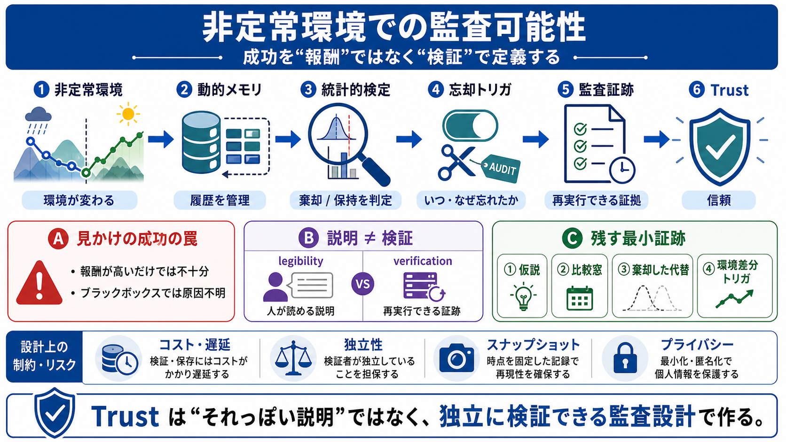

従来の見方
ログや重みを“消して”整理する

報酬（performance）だけでは不十分です。環境が変わったとき、「なぜ変わったか」を運用者が再検証できることが trust（信頼）へ直結します。
報酬が良くても内部状態がブラックボックスなら、「本当に適応したのか」「偶然で漂っているのか」を判定できません。すると成功が“見せかけの成功”になります。
忘却（memory pruning / 忘却）は単なるデータ削除ではありません。統計的仮説検定と結びつけると、「何を残し何を捨てたか」が数学的に説明可能になります。
低い regret を追うだけでなく、適応的ベイズ学習エージェントが統計的検定を使って履歴を管理します。その結果、「いつ・なぜ忘れたか」が監査向けに形式化されます。
「統計的パワーのセットポイント」とは、分布が変わった可能性を、どの検出力で“十分に証明できた”とみなすかです。これが、過去履歴を忘れる/保持する基準になります。
エージェントのrationale（説明文）が“それっぽい理由”を作れると、棄却判断の実根拠を保証しません。監査は説明の整合性だけでは破綻し得ます。
監査ログが同一主体の自己検証（自己整合テスト）だと、独立性が崩れて簡単に欺けます。さらに意思決定時点の環境スナップショットがないと、再現は“幻”になります。
非定常監査には、環境スナップショットと、忘却トリガの差分（差分ログ）が不可欠です。意思決定の前後で「何が観測され」「どの差分で」「何を棄却したか」を結びます。
忘却が“観測可能”であるとは、(i)比較した仮説、(ii)比較窓、(iii)棄却した代替、(iv)忘却トリガ（環境差分）を記録し、紐づけることです。
比較窓・スナップショット・差分・代替棄却まで全部記録すると、監査コストと遅延が増えます。理想設計を“高頻度ループ”にそのまま載せるのではなく、実装可能な最小単位を評価する必要があります。
“生データを隠しても監査は成立する”は条件付きです。証拠クラスや、不確実性調整の差分が識別に寄与すると、漏えいリスクが残ります。
忘却と監査を結びつけ、統計的検定で“忘れる根拠”を形式化するのは前進です。次は、独立性・環境スナップショット・比較窓・差分を含む再実行可能な証跡を、運用コストとプライバシー制約込みで最適化すべきです。
No references found